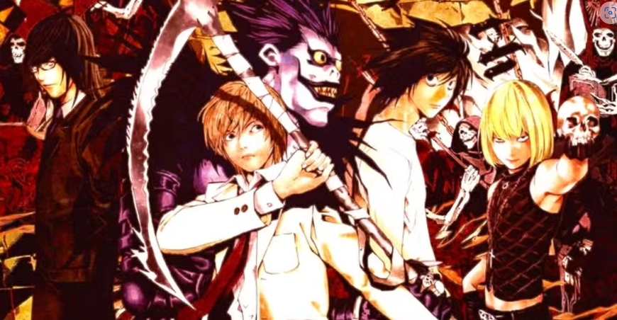

Confira a Notícia:
Diversos animes clássicos estão cada vez mais acessíveis para os fãs com a popularidade das plataformas de streaming. Títulos como Naruto, que segue a jornada de um jovem ninja determinado a se tornar o mais forte e ser reconhecido em sua vila, marcaram gerações com a trama emocionante. Já Death Note apresenta uma abordagem mais sombria e conta a história de Light Yagami, um estudante que encontra um caderno capaz de matar qualquer pessoa. A obra explora temas complexos como moralidade, poder e justiça e, por isso, se tornou bem conhecida do público.
Além desses, outros títulos emblemáticos podem ser assistidos em as plataformas como Crunchyroll, Netflix, HBO Max e Star Plus. Veja, a seguir, a lista completa de animes clássicos que todos deveriam assistir pelo menos uma vez. Em cada item, você encontra detalhes sobre o enredo, repercussão e onde assistir.